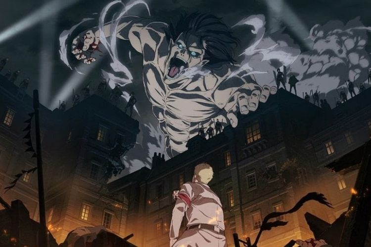
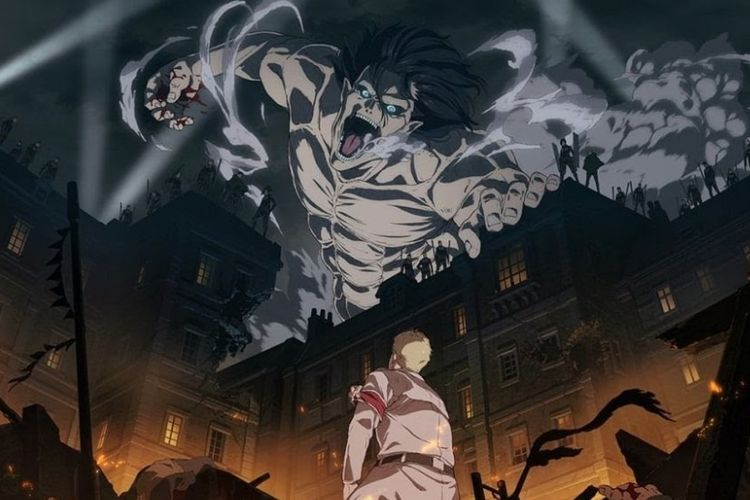

Home
TOP 10 Anime
TOP 10 Mangs


Anime (アニメ) is a Japanese shorthand for the English word "animation", which is pronounced animēshon in Japanese . It means animated film , except that in Japan the term is used to describe all animated films and series, regardless of their country of origin. Outside of Japan, the word anime is used to describe Japanese animated films and the style of Japanese animation . A theory about the origin of the term anime from the French word animé (animated) or les dessins animés (animated images) is debatable. Both forms - the original animēshon and the shortened anime - are used by the Japanese. Everyone knows that a subculture is a special sphere of culture, a sovereign integral formation within the dominant culture, which is distinguished by its own system of values, customs, norms, and traditions. A subculture does not oppose the dominant culture. It contains a number of values of the dominant culture and adds to them new values peculiar only to it.Anime fans have long been recognized as a special youth subculture. Indeed, it is possible to define all its main features: special interests and values (and everything is clear, this is anime, manga, culture and history of Japan, collecting figurines, posters, drawing in the style of anime, creating fan fiction, etc.); slang (a lot can be written about this, since anime slang is a separate layer of modern youth speech. In addition, many people use in their language barbarisms copied from the Japanese language, which replace the words "Hello" -"Konnichiva", "Thank you" - "Arigato", "All is well" - "Sayonara". Well, it is simply impossible not to mention "NO!", which can be used to express a wide variety of emotions); demeanor. It is quite difficult to define a behavior common to all anime fans. In general, teenage animists usually express their emotions more actively than adult animists; clothing and appearance. Sometimes by the tiniest little details of clothing (a keychain on the phone in the form of an anime character, animeit is possible to define an anime player. Not to mention the bags and t-shirts with the corresponding symbols, which immediately distinguish the anime artist from the crowd. Determining elements of an anime fan's appearance are also a suitable hairstyle, like that of a favorite character, or simply a look and color characteristic of anime or manga; presence of informal groups and societies. Of course, these are clubs and other associations of the anime community.
 

©Написала Шуняєва Marianna
By you.Published